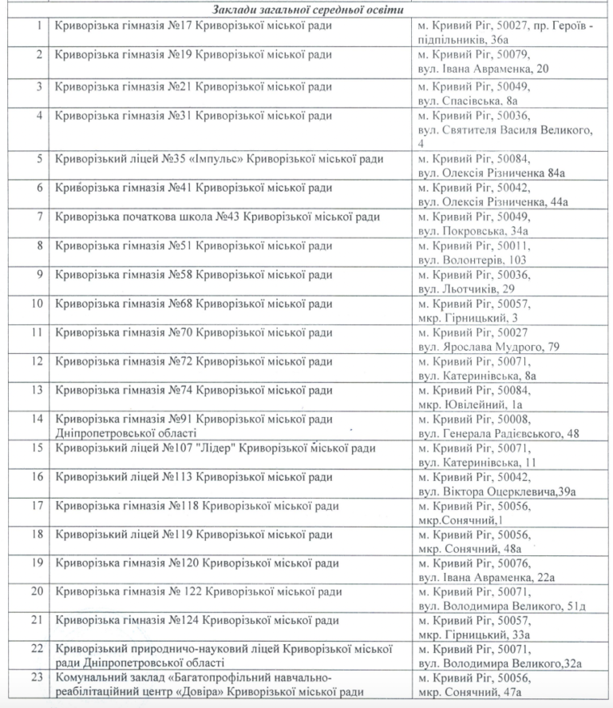
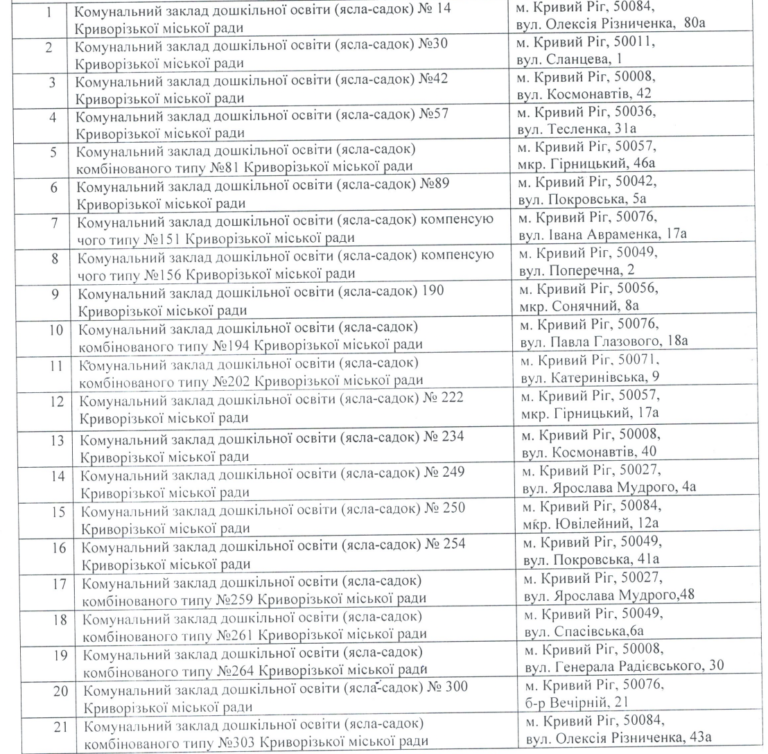
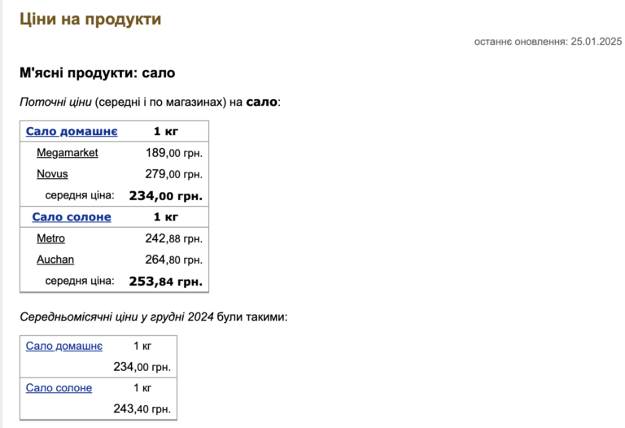
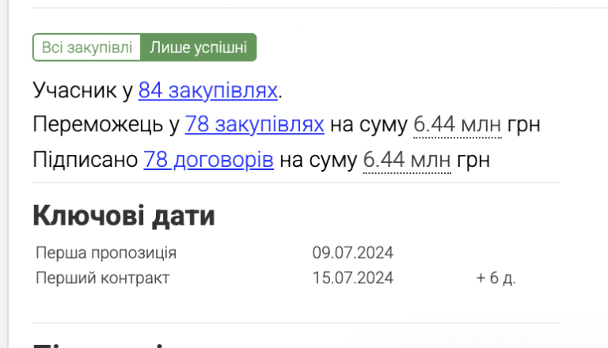

10 січня відділ освіти виконкому Саксаганської районної у місті ради за результатами тендеру уклав договір з ФОП «Вербицька Валентина Володимирівна» на поставку свинячого сала зі спеціями для закладів загальної середньої та дошкільної освіти. Виглядає так, що конкурентів у криворізької підприємниці не було – на торги більше ніхто не прийшов.
Згідно з укладеним договором, за 149 400 грн протягом року, щодня з понеділка по п'ятницю, постачальник має привозити товар до 23 шкіл та 21 дитсадка Саксаганського району згідно заявок Замовника.
 У специфікації до договору прописана технічна характеристика товару: це мають бути пласти шпика зі шкірою без залишків щетини та синців з наявністю кристалів кухонної солі. Шматок сала має бути 6-8 см завтовшки, з прошарком мʼяса від 20% до 50%. Товар має бути упакованим у вакуумну упаковку. Всього замовлено 664 кг продукції. Тобто ціна за кілограм сала у цій закупівлі становить 225 грн. Середня ціна на сало солоне в Україні, згідно з українським порталом про фінанси Мінфін, наразі становить 253,84 грн.
ФОП «Вербицька Валентина Володимирівна» зареєстрована з липня 2024 року. Згідно з даними аналітичної платформи Clarity Project, всього за пів року своєї діяльності бізнесвумен стала переможницею у 78 із 84 закупівель, натендеривши 6,44 млн грн.
Згідно з інформацією з YouControl, основний вид її діяльності – оптова торгівля м'ясом і м'ясними продуктами, також підприємниця займається торгівлею рибою, ракоподібними та молюсками, молочними продуктами, яйцями, харчовими оліями, жирами, фруктами й овочами.
Для чого у харчуванні для дітей збираються використовувати сало, та чи є така ініціатива здоровим харчуванням, питання залишається відкритим.